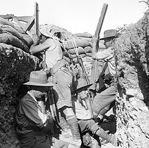
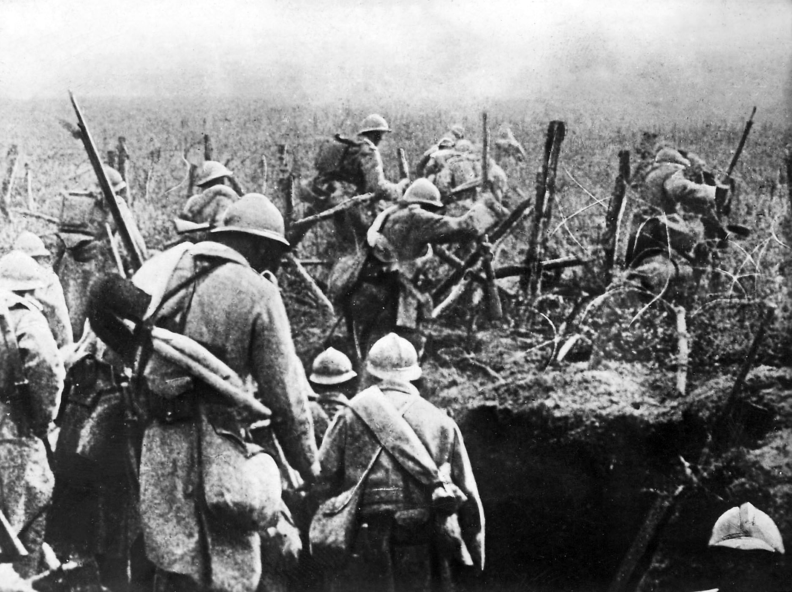
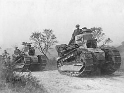

Archduke Franz Ferdinand assassinated. Austria-Hungary issues a harsh ultimatum to Serbia. When Serbia partially refuses, Austria-Hungary declares war — triggering a cascade of mobilizations.
Aug 1914
War Erupts Across Europe
Germany invades Belgium, triggering British entry. By August 4, all major powers are at war. German advance through Belgium proceeds to France — but stalls at the Marne. Trench warfare begins.
1915
Gallipoli — The ANZAC Campaign
Allied attempt to knock Turkey out of the war by capturing the Dardanelles. The campaign fails catastrophically; 500,000 casualties. But it forged national identities for Australia and New Zealand.

1916
Year of Blood
Verdun and the Somme together claim over 2 million casualties in a single year. Both sides are bled white. The war becomes a test of industrial production and national willpower.

Apr 1917
America Enters the War
German unrestricted submarine warfare and the Zimmermann Telegram (proposing a German-Mexico alliance against the US) push America into the war. Fresh US troops begin arriving.

Nov 1918
Armistice — The War Ends
At 11:00 AM, November 11, the guns go silent. The Treaty of Versailles (1919) punishes Germany so harshly it plants the seeds of World War II. The "war to end all wars" sets up its sequel.